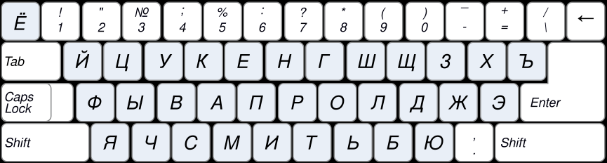
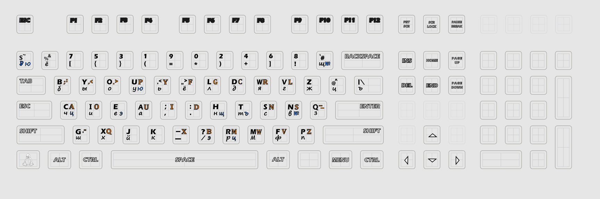
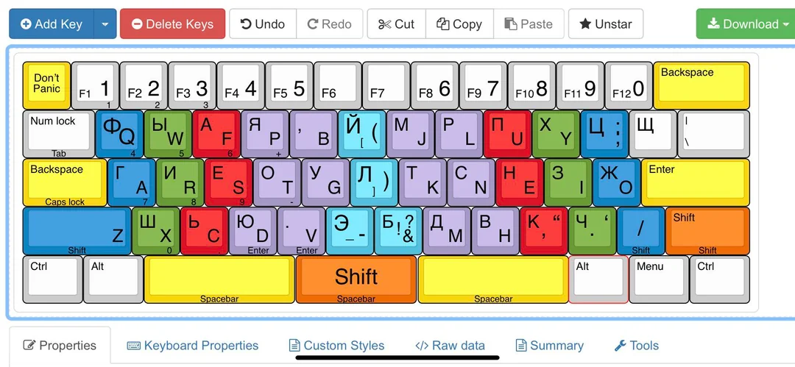
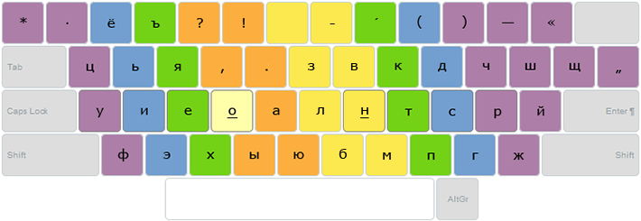
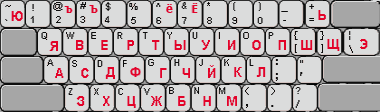
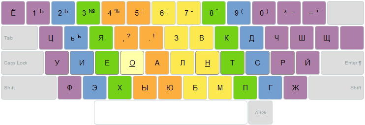
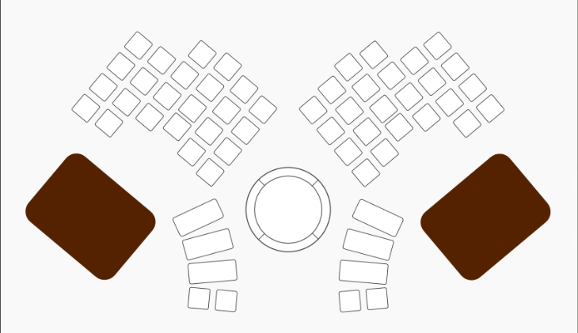

Модуль №1 — Раскладки клавиатур
В этом разделе представлены различные русские раскладки клавиатуры. Для каждой раскладки указаны описание, особенности и визуальное изображение.
—
ЙЦУКЕН
Описание: Классическая русская раскладка, используемая по умолчанию в большинстве ОС.
Особенности:
Стандартное расположение букв.
Основана на машинописной традиции.
{kind=link}

—
Вызов
Описание: Авторская раскладка, оптимизированная для быстрого набора текста.
Особенности:
Частотное размещение символов.
Минимизация движения пальцев.
{kind=link}

—
Зубачев
Описание: Экспериментальная раскладка, ориентированная на эргономику и симметрию.
Особенности:
Центрирование часто используемых букв.
Подходит для длительного набора текста.
{kind=link}

—
Скоропись
Описание: Раскладка, ориентированная на скоростной набор с минимальными усилиями.
Особенности:
Максимальное использование сильных пальцев.
Частотный анализ.
{kind=link}

—
Русфон
Описание: Фонетическая раскладка, адаптированная для обучения и интуитивного ввода.
Особенности:
Упрощённое запоминание.
Подходит для начинающих.
{kind=link}

—
Диктор
Описание: Раскладка, оптимизированная для дикторов и стенографистов.
Особенности:
Быстрый доступ к служебным символам.
Поддержка речевых сокращений.
{kind=link}

—
Ант
Описание: Это эргономичная клавиатура, разработанная с учётом эргоэкономики: минимизации нагрузки на кисти, оптимизации движений пальцев и повышения скорости набора.
Особенности:
Разделённая раскладка.
Минимизация движения пальцев.
Перепрограммируемость
{kind=link}

—